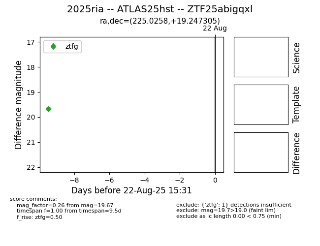

Target 2025ria at 2025-08-22 15:31, see:
FINK: fink-portal.org/ZTF25abigqxl
Lasair: lasair-ztf.lsst.ac.uk/objects/ZTF25abigqxl
ALeRCE: alerce.online/object/ZTF25abigqxl
TNS: wis-tns.org/object/2025ria
YSE: ziggy.ucolick.org/yse/transient_detail/2025ria
alt names
ZTF25abigqxl (ztf,alerce)
2025ria (tns,yse)
ATLAS25hst (atlas)
coordinates:
equatorial (ra, dec) = (225.0258,+19.24731)
galactic (l, b) = (24.8875,+59.49480)
photometry
last ztfg=19.67
1 ztfg detections
